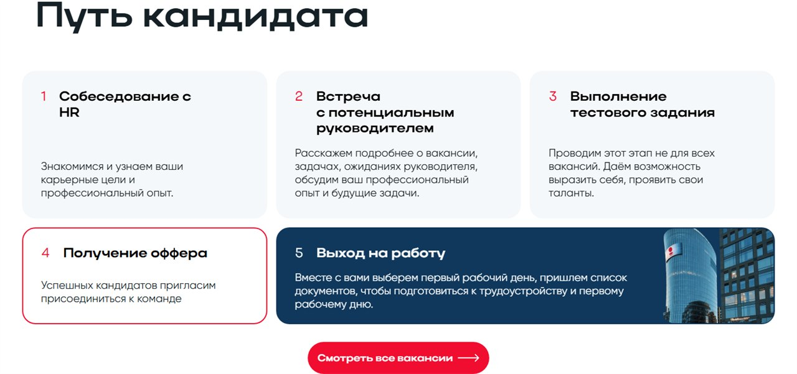

01
Путь кандидата
От знакомства с банком до отклика в пару кликов
Сайт дублирует логику живого диалога с соискателем: знакомит с банком и корпоративными ценностями, помогает выбрать профессиональное направление, а затем найти позицию и откликнуться в пару кликов.
На главной — видеоблок, достижения БСПБ в цифрах, карточки с бенефитами и блок «Путь кандидата» от отклика до оффера. Каталог вакансий — фильтры и полнотекстовый поиск: позиция находится за секунды, форма отклика доступна прямо на странице вакансии.
